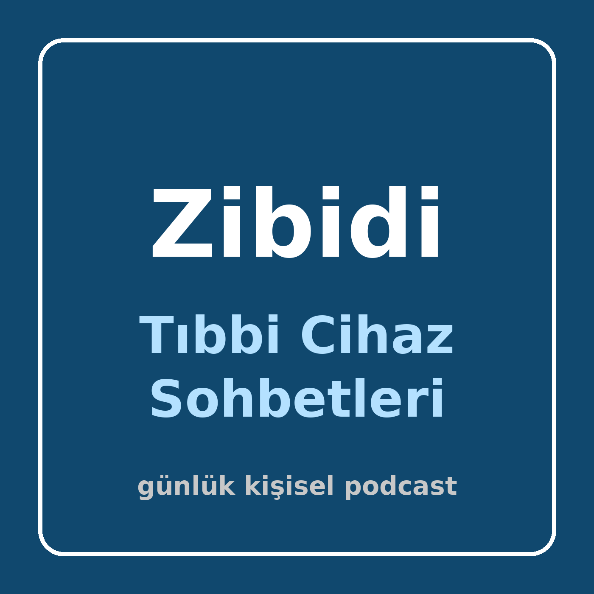

Biyomedikal mühendisliği ve tıbbi cihazlar üzerine günlük, kısa Türkçe sohbetler. Kişisel kullanım içindir.
RSS: https://ssoykan.github.io/tibbi-cihaz-podcast/feed.xml
AntennaPod: + Podcast ekle → RSS adresi ekle → yukarıdaki adresi yapıştır.